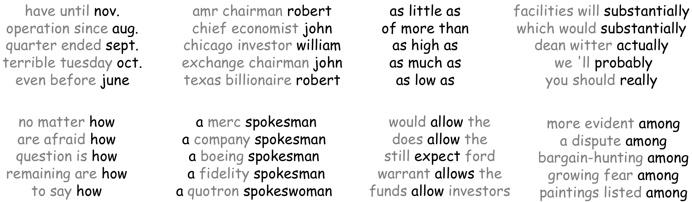

语言模型（Language Modeling） (英文原文)
所谓“对某种事物建模”的含义？ (英文原文)
举个例子，想象你有了一个物理世界的模型，那么你期望这个模型能做什么事呢？对一个好模型来说，给定某种“上下文”的描述，那么它也许能预测接下来会发生什么，也就是事物的当前状态，就像下面这样：
我们有用某种材料做成的符合某种尺寸的固定数量的立方体搭成的一个塔。如果我们用这个力从某个点向某个方向推动底部立方体。会发生什么？
一个好的模型能够模拟真实世界的行为:它能“理解”哪些事件更符合世界，即哪些事件更有可能发生。
对语言又是怎么样呢？ (英文原文)
对于语言来说，直观理解是完全一样的！不同之处在于对事件的定义。在语言中，事件 是指一个语言单位（文本、句子、token、符号），语言模型的目标是估计这些事件的概率。
语言模型(Language Models, LMs)估计不同的语言单位的概率，如符号，token和token序列。
但这到底有什么用呢？
我们每天都和语言模型打交道! (英文原文)
我们每天都会看到语言模型在起作用——让我们看一些例子。通常来说大型商业服务中的模型比我们今天讨论的更复杂一些，但想法是一样的：如果我们能估计单词、句子等的概率，那么我们就能以各种方式，有时甚至出乎意料的方式，来使用它们。
对人类来说容易的事情，对机器来说很难 (英文原文)
对于自然语言，我们人类早已具备对“概率”的某种感觉。例如，当我们交谈时，通常我们都能很好地理解对方（至少能理解我们说出的话语）。对那些发音很相似的语义选项的歧义，我们能够消除它们的歧义，而我们甚至都没有主动意识到这一点！
但是机器应该如何理解这一点呢？机器需要一个语言模型来估计句子的概率。一个好的语言模型应该能为正确的语义选项分配更大的概率。
通用框架 (英文原文)
文本概率 (英文原文)
我们的目标是估计文本片段的概率；为了简单起见，我们假设处理的是句子。我们希望这些概率能反映一种语言的知识。具体来说，根据我们的语言模型，我们希望“更有可能”出现在一种语言中的句子能有更大的概率。
一个句子有多大的可能性出现在一种语言中？ (英文原文)

让我们用简单的概率论知识来帮助理解。想象我们有一个装有不同颜色的球的篮子。从这个篮子里选出一个特定颜色（比如绿色）的球的概率就是绿色球出现在篮子里的频率。
如果也这样来处理句子呢？因为无法得到一个包含自然语言中所有句子的文本语料库，所以很多句子不会出现在我们的语料库中。虽然在这些句子中，有些明显比其他句子更有可能出现，但按上述方法处理后，这些句子的概率都为零，也就是说，对模型来说看起来是一样糟糕。这意味着，上面的方法不好，我们必须进行一些更明智的处理。
句子概率：分解成更小的部分 (英文原文)
如果我们把句子当作最小单位来处理，我们则无法可靠地估计句子的概率。相反，我们可以将一个句子的概率分解为更小部分的概率。
例如，我们以“我看见一只猫在垫子上”这句话为例，想象我们逐词地读它。在每一步中，我们都会估计到目前为止看到的所有token的概率。因为我们不进行任何无效的计算（绝不！），所以，一旦一个新词出现，我们不用抛弃之前已经算过的概率：我们可以通过更新它来解释一个新词，请看图示。

形式化地，定义\(y_1, y_2, \dots, y_n\)为一个句子中的tokens, \(P(y_1, y_2, \dots, y_n)\)为以给定的顺序看见所有这些token的概率。使用概率的乘法法则(即链式法则)，我们得到： \[P(y_1, y_2, \dots, y_n)=P(y_1)\cdot P(y_2|y_1)\cdot P(y_3|y_1, y_2)\cdot\dots\cdot P(y_n|y_1, \dots, y_{n-1})= \prod \limits_{t=1}^n P(y_t|y_{\mbox{<}t}).\] 我们将文本的概率分解为了给定前序上文的每个token的条件概率。
我们得到了：从左向右的语言模型 (英文原文)

我们得到的是标准的从左到右语言建模框架。这个框架非常通用：N元语法和神经语言模型的唯一不同之处在于它们计算条件概率\(P(y_t|y_1, \dots, y_{t-1})\)的方式不同.
编者按: 在后续的课程中我们将看到其他类型的语言模型：例如，掩码语言模型或者是以不同方式分解联合概率的模型（例如，任意顺序的token，而不是固定的从左到右的顺序）。
稍后我们将讨论N元语法和神经模型的细节。现在，我们讨论如何使用语言模型生成文本。
使用语言模型生成文本 (英文原文)
一旦我们有一个语言模型，我们就可以用它来生成文本。我们一次生成一个token：根据前序的上下文预测下一个token的概率分布，并从这个分布中采样。
或者你也可以使用贪心解码：在每个一步中，选择概率最高的token。然而，这通常效果并不好：稍后我将展示真实模型的一些例子。
尽管很简单，但这一采样方法在生成中还是很常见的。在“生成策略”一节中，我们将研究该方法的不同变体以获得具有特定质量的样本； 例如，更有“新意”或者更“平凡”。
N元语法(N-gram)语言模型 (英文原文)
让我们回顾一下，通用的从左到右语言建模框架将一个token序列的概率分解为给定前序上下文的每个token的条件概率： \[P(y_1, y_2, \dots, y_n)=P(y_1)\cdot P(y_2|y_1)\cdot P(y_3|y_1, y_2)\cdot\dots\cdot P(y_n|y_1, \dots, y_{n-1})= \prod \limits_{t=1}^n P(y_t|y_{\mbox{<}t}).\] 目前唯一不清楚的就是如何计算这些概率。
我们需要: 定义如何计算条件概率 \(P(y_t|y_1, \dots, y_{t-1})\).
与我们之前在单词嵌入课程中看到的基于计数的方法类似，n元语法语言模型也从文本语料库中计算全局统计 数据。
如何: 基于文本语料库的全局统计数据进行估计，即计数. :
也就是说，n元语法的语言模型估计概率\(P(y_t|y_{\mbox{<}t})=P(y_t|y_1, \dots, y_{t-1})\)的方式几乎和我们之前估计的从篮子选绿球的概率一样。“几乎”一词包含n元语法原模型的关键构成： 马尔可夫特性和平滑。
马尔科夫性 (独立性假设) (英文原文)
计算\(P(y_t|y_1, \dots, y_{t-1})\)最直接的方法是 \[P(y_t|y_1, \dots, y_{t-1}) = \frac{N(y_1, \dots, y_{t-1}, y_t)}{N(y_1, \dots, y_{t-1})},\] 其中\(N(y_1, \dots, y_k)\)是token序列\((y_1, \dots, y_k)\) 出现在文本中的次数。
出于我们之前讨论过的同样原因，这样效果并不会好：许多片段\((y_1, \dots, y_{t})\)没有在语料库中出现过, 因此会使句子的概率变为零。为了解决这个问题，我们做了一个独立性假设（假设马尔可夫性成立）：
一个单词的概率只取决于前面固定数量的单词。
- n=3 (三元trigram模型): \(P(y_t|y_1, \dots, y_{t-1}) = P(y_t|y_{t-2}, y_{t-1})\),
- n=2 (二元bigram模型): \(P(y_t|y_1, \dots, y_{t-1}) = P(y_t|y_{t-1})\),
- n=1 (一元unigram模型): \(P(y_t|y_1, \dots, y_{t-1}) = P(y_t)\).
下图请看n-gram模型的标准分解是如何变化的。
平滑化：重新分配概率质量 (英文原文)
让我们想象处理一个4元语言模型并考虑下面的例子：

如果上式的分母或分子都为零呢？这两种情况对模型都不好。为了避免这些（以及其他）问题，通常的做法是用平滑 。平滑是指重新分配概率质量：从已知事件中“窃取”一些质量给那些未出现过的。
编者按: 在这点上，我会忍不住想象一个勇敢的罗宾汉劫富济贫——就像概率质量的平滑一样。不幸的是，我不得不阻止自己这样写，因为老实说，平滑并不是那么明智——这会冒犯罗宾。
避免分母为零 (英文原文)
如果我们的语料库中从未出现过“cat on a”这个短语，我们将无法计算其概率。因此，如果发生这种情况，我们需要一个“B计划”。
回退 (又称愚蠢回退) (英文原文)
其中一个解决方案是对我们不太了解的上下文使用较少的上下文，称之为 回退：
- 如果可行，则使用三元语法;
- 如果不行，则用二元语法;
- 二元还不行，则使用一元.
更聪明的做法：线性插值 (英文原文)
更聪明的解决方法是对一元、二元、三元等等进行混合。为此，我们需要非负的权重\(\lambda_0, \lambda_1, \dots, \lambda_{n-1}\)满足 \(\sum\limits_{i}\lambda_i=1\) . 然后更新后概率为：
避免分子为零 (英文原文)
如果短语“cat on a mat”从未出现在我们的语料库中，那么整个句子的概率将为零——但这并不意味着这个句子是不可能出现的！为了避免这种情况，我们依然需要一个“B计划”。
更明智的平滑 (英文原文)
Kneser-Ney 平滑.
n元语法的语言模型最常用的平滑是Kneser-Ney平滑：它是回退的一个更明智的变体。更多细节在这里。
生成(以及示例) (英文原文)
n-gram语言模型的生成过程与一般模型相同：给定当前上下文（历史），生成下一个token（在词表中的所有token上）的概率分布，采样一个token，将该token添加到序列中，然后再次重复上述所有步骤。n-gram模型特有的唯一部分是我们计算概率的方式。请看如下示例。
生成的文本的实例 (英文原文)
为了给大家展示一些例子，我们在250万个英文句子上训练了一个3元的模型。
数据集细节。
数据是WMT英俄翻译数据的英文部分，由250万句子对组成（一对英语和俄语句子是彼此的翻译）。该数据集包含新闻数据、维基百科标题和Yandex发布的100万个网络上爬取的句子。这些数据是机器翻译的标准数据集之一；对于语言建模，我们只使用了英文部分的句子。
请注意，您在下面看到的所有内容都是由模型生成的，并且是在在没有经过任何更改或过滤的。任何您可能不喜欢的内容都是由于训练数据而出现的。我们所能做的就是使用标准数据集，并且我们也是这样做的。
如何观察： 观察这些n-gram语言模型生成的样本。这些采样有什么明显的问题？n-gram模型设计中的什么地方导致了这个问题？
so even when i talk a bit short , there was no easy thing to do different buffer flushing strategies in the future , due to huge list of number - one just has started production of frits in the process and has free wi - fi ” operation .... _eos_
he can perform the dual monarchy arrived in moscow lying at two workshops one in all schools of political science ..." and then you can also benefit from your service . _eos_
alas , still in the lower left corner will not start in 1989 . _eos_
john holmes is a crystal - clear spring of 2001 . _eos_
it simply yields a much later , there were present , ferrocenecontaining compounds for clinical trials in connection with this chapter you ' re looking for ways of payment and insert preferred record into catalogue of negative influences - military . _eos_
impotence in the way gazprom and its environment . _eos_
according to the address and tin box , luggage storage , gay friendly , all of europe to code - transitions . _eos_
26 . 01 page 2 introduction the challenge for the horizontal scroll bar in sweden , austria _eos_
the rza lyrics are brought to you , there are a few . _eos_
golden sands , once again the only non - governmental organizations recognized by the objector . _eos_
hahn , director of the christian " love and compassion " was designed as a result of any form , in the transaction is active in the stuva grill . _eos_
there is a master ’ s a major bus routes in and the us became israel were rewarded with an electric air conditioning television satellite television . _eos_
, we have had , 1990 in aksaray – turkey has provided application is built on low - power plants . _eos_
when this option may be the worst day of amnesty international delegations visited israel , and felt that his sisters , that they are reserved for zyryanovsk concentrating factory there is a member of the shire ," given as to damage the expansion of a meeting over a large health maintenance organization , smoking , airconditioning , designated smoking area . _eos_
4 . 0 beta has been received the following initiatives in order to meet again in 1989 , and in the face of director of branch offices in odessa on time , the church of norway is an advertisement for the protection the d - 54673 , limousine , employee badges , etc ) downloading this icecat data - do can talk about israel as well as standard therapy of czech republic estonia greece france ireland israel italy jamaica japan jordan kazakhstan kenya kiribati kuwait kyrgyzstan lao people ' s closing of the task of mill - a fire that _eos_
one lesson the teacher ! _eos_
pupils from eastern europe , africa , saudi arabia ’ s church , yearn for such an open structure of tables several times on monday 14 september 2003 , his flesh when i was curious to know and also to find what they are constructed with a speeding arrow . _eos_
blackjack : six steps to resolve complex social adaptation of the room ' s polyclinics and to english . _eos_
this is the right nanny jobs easier for people to take part in the history of england has a large number of regional and city administration . _eos_
melody for the acquisition , provision or condition . _eos_
they have a proper map that force distant astronomical objects have been soaring among ukrainians - warriors ". _eos_
also now recognizing how interdependent they are successful in emulating poland ’ s satisfaction . _eos_
we tried to make lyrics as correct as possible , however if you have any corrections for abecedário da xuxa lyrics are brought to you by lyrics - keeper . _eos_
49 . 99 webmoney rub , 893 . 6 million euros . _eos_
您可能注意到这些例子并不通顺：可以清楚地看到，该模型不使用长上下文，只依赖于几个token。无法使用长上下文是n-gram模型的主要缺点。
现在，我们采用相同的模型，但执行贪心解码：在每一步中，我们选择概率最高的token。我们使用了上面示例中的两个token长的前缀（对于每个例子，输入到模型的前缀有下划线）。
如何观察： 观察同一个模型使用贪心解码生成的示例。你喜欢这些文字吗？你会如何描述它们？
so even if the us , and the united states , the hotel is located in the list of songs , you can add them in our collection by this form . _eos_
he can be used to be a good idea to the keyword / phrase business intelligence development studio . _eos_
alas , the hotel is located in the list of songs , you can add them in our collection by this form . _eos_
john holmes _eos_
it simply , the hotel is located in the list of songs , you can add them in our collection by this form . _eos_
impotence in the list of songs , you can add them in our collection by this form . _eos_
according to the keyword / phrase business intelligence development studio . _eos_
26 . _eos_
the rza ( bobby digital ) is a very good . _eos_
golden sands resort . _eos_
hahn , of the world . _eos_
there is a very good . _eos_
, we a good idea to the keyword / phrase business intelligence development studio . _eos_
when this option is to be a good idea to the keyword / phrase business intelligence development studio . _eos_
4 . 5 % of the world . _eos_
one lesson from the city of the world . _eos_
pupils from the city of the world . _eos_
blackjack : six - party talks . _eos_
this is the most important thing is that the us , and the united states , the hotel is located in the list of songs , you can add them in our collection by this form . _eos_
melody for two years , the hotel is located in the list of songs , you can add them in our collection by this form . _eos_
they have been a member of the world . _eos_
also now possible to use the " find in page " function below . _eos_
we tried to make lyrics as correct as possible , however if you have any corrections for the first time in the list of songs , you can add them in our collection by this form . _eos_
49 . _eos_
我们能看到这些贪心解码出的问题：
- 更短 - 句子结束符 _eos_ 有很高的概率;
- 非常相似 -很多文本都以相同的短语结束。
为了克服n-gram语言模型的主要缺陷，即固定的上下文大小，我们现在将讨论神经网络模型。如我们将在后面看到的，当使用更长的上下文时，贪心解码并不糟糕。
神经网络语言模型 (英文原文)
在我们的通用的从左到右语言建模框架中, token序列的概率为: \[P(y_1, y_2, \dots, y_n)=P(y_1)\cdot P(y_2|y_1)\cdot P(y_3|y_1, y_2)\cdot\dots\cdot P(y_n|y_1, \dots, y_{n-1})= \prod \limits_{t=1}^n P(y_t|y_{\mbox{<}t}).\] 我们再回顾一下还有哪些事没做。
我们需要: 定义如何计算条件概率 \(P(y_t|y_1, \dots, y_{t-1})\).
与基于全局语料库统计信息来定义公式的n-gram模型不同，神经模型能教会网络预测这些概率。
怎么做: 训练一个神经网络来进行预测
直观上，神经语言模型做了两件事：
-
处理上下文 → 和特定模型相关
这里的主要思想是为当前位置之前的上文获取一个向量表示。模型使用该表示预测下一个token的概率分布。这一部分可能会因模型结构的不同而有所不同（例如，RNN、CNN，任何你想要的），但要点是相同的——对上下文进行编码。 -
生成下一个token的概率分布→ 和特定模型无关
一旦上下文被编码，通常以相同的方式生成概率分布——见下文。
这就是分类！ (英文原文)
我们可以把神经语言模型看作神经网络分类器。它们将文本的前缀分类为|V|类，类别则是词汇表中的token。
高层流水线 (英文原文)
因为从左到右的神经语言模型可以看作是分类器，所以总体流水线与我们在文本分类课程中看到的非常相似。对于不同的模型架构，通用流水线如下所示：
- 将前序词汇（上下文）的词嵌入输入到网络中；
- 从网络中得到上文的向量表示;
- 依据这一向量表示，预测下一个token的概率分布。
与神经分网络类器类似，我们可以用一种非常简单的方式来考虑分类的部分（即，如何从文本的向量表示中获得token概率）。
文本的向量表示维度为d，但最终，我们需要一个大小为\(|V|\)的向量（表示\(|V|\)个token/类别的概率）。要从\(d\)维的向量得到\(|V|\)维的向量，我们可以使用一个线性变换层。一旦我们有了一个\(|V|\)维的向量，剩下的就是用softmax操作将原始数字转换为类别概率。
另一种视角: 与输出的词嵌入向量做点积 (英文原文)
如果我们更仔细地观察最后一个线性层，我们会发现它有|V|列，每列对应于词表中的一个token。因此，这些向量可以看作是输出词嵌入。
现在，我们可以根据这一视角来更改模型示意图。应用最后一个线性层相当于计算文本表示h和每个输出词嵌入之间的点积。
形式化地, 如果 \(\color{#d192ba}{h_t}\)是上文\(y_1, \dots, y_{t-1}\)的向量表示\(\color{#88bd33}{e_w}\)是输出词向量，那么 \[p(y_t| y_{\mbox{ <}t})=\frac{exp(\color{#d192ba}{h_t^T}\color{#88bd33}{e_{y_t}}\color{black})}{\sum\limits_{w\in V}exp(\color{#d192ba}{h_t^T}\color{#88bd33}{e_{w}}\color{black})}.\] 输出词嵌入与上文文本表示更接近的token将获得更大的概率。
在讨论实用技巧时，这种看待语言模型的方式将非常有用。此外，这总的来说很重要，因为它能让你了解到底发生了什么。因此，下面我都将使用这一视角。
训练及交叉熵损失 (英文原文)
编者按: 这和我们在文本分类教程中讨论的交叉熵损失是同一个。
神经语言模型被训练来预测给定前序上下文的下一个token的概率分布。直观地说，在每一步中，我们都会最大化模型分配给正确token的概率。
形式化地, 如果\(y_1, \dots, y_n\)是一个训练用的token序列，那么在第t时间步模型会预测一个概率分布 \(p^{(t)} = p(\ast|y_1, \dots, y_{t-1})\)。 此步的目标是\(p^{\ast}=\mbox{one-hot}(y_t)\), 我们想要一个能分配概率1给正确的token \(y_t\)，0给其他token的模型。
标准的损失函数是交叉熵损失。目标分布\(p^{\ast}\)和预测的分布\(p^{}\)之间的交叉熵损失为： \[Loss(p^{\ast}, p^{})= - p^{\ast} \log(p) = -\sum\limits_{i=1}^{|V|}p_i^{\ast} \log(p_i).\] 因为只有一个\(p_i^{\ast}\)是非零的 (对正确的token\(y_t\)), 我们能得到 \[Loss(p^{\ast}, p) = -\log(p_{y_t})=-\log(p(y_t| y_{\mbox{<}t})).\] 在每一步中，我们最大化模型分配给正确token的概率。请看下面对单个时间步的示意图
对整个序列，损失为\(-\sum\limits_{t=1}^n\log(p(y_t| y_{\mbox{<}t}))\). 请看下面训练过程的图示（下图针对RNN模型，但也适用于不同的模型）。
交叉熵损失和KL散度
当目标分布是 one-hot (\(p^{\ast}=\mbox{one-hot}(y_t)\)), 交叉熵损失\(Loss(p^{\ast}, p^{})= -\sum\limits_{i=1}^{|V|}p_i^{\ast} \log(p_i)\)等价于 Kullback-Leible散度\(D_{KL}(p^{\ast}|| p^{})\).
因此，标准NN-LM优化可被看作试图最小化模型预测分布\(p\)和经验目标分布\(p^{\ast}\)之间的距离（尽管形式上KL不是有效的距离度量）。 有很多训练样本时，这接近于最小化到实际目标分布的距离。
模型：循环(Recurrent)网络 (英文原文)
现在我们来看看如何使用循环模型来进行语言建模。你在这里看到的一切都将应用于所有循环单元。在本部分中，我说的“RNN”一般指循环单元（例如，vanilla RNN、LSTM、GRU等）。
• 简单情况: 单层 RNN
最简单的模型是单层循环网络。在每一步中，当前状态都包含前序token的信息，并用于预测下一个token。在训练过程中，你需要输入训练样例。在推理时，将模型生成的token作为上文输入，通常一直重复直至生成句尾结束符_eos_ 。
• 多层: 将一个RNN的状态输入到下一个RNN
为了获得更好的文本表示，可以堆叠多个RNN层。在这种情况下，高层的RNN输入是来前一层输出的表示。
主要的假设是，当使用多层时，低层将捕捉局部信息，而高层将能够捕获较长的依赖关系。
模型: 卷积(Convolutional)网络 (英文原文)
编者按: 在这一部分中，我假设您已经阅读了文本分类课程中的卷积模型部分。如果没有，请阅读 卷积模型附录。
与用于文本分类的CNN相比，语言模型有几个不同之处。这里我们讨论CNN语言模型设计的一般性原则；关于特定体系结构的详细描述，请参阅相关论文部分。

在设计CNN语言模型时，你必须记住以下几点：
-
阻断来自未来token的信息流
要预测一个token，从左到右的语言模型必须只使用前序的token—确保你的CNN除了它们无法看见其他信息！例如，可使用填充(padding)来将token向右移动—参见上图。 -
不要移除位置信息
与文本分类不同，位置信息对于语言模型非常重要。因此， 不要使用池化(pooling)（要使用也必须非常小心）。 -
如果你堆叠了很多层，别忘记残差连接
如果你堆叠了很多层，训练一个很深的网络可能会比较困难。为了避免这种情况，请使用残差连接—参阅下面的细节。
感受野: 层数越多，感受野越多 (英文原文)

当使用没有全局池化的卷积模型时，您的模型会不可避免地具有固定大小的上下文。这不是我们想要的：固定大小的上下文正是我们在n-gram模型中的遇到的问题。
然而，如果n-gram模型典型的上下文大小是1-4，那么卷积模型中的上下文可能会相当长。参看右侧图示：只有3个卷积层，使用较小的内核大小3时，一个CNN网络能有7个token长度的上下文。如果你堆叠了很多层，那么你可以得到一个非常大的上下文长度。
残差连接: 更容易地训练深层网络 (英文原文)
处理更长的上下文时需要很多层。不幸的是，当堆叠太多层时，梯度通过深层网络从上到下传播可能会出问题。为避免这该问题，我们可使用 残差连接或更复杂的变体，公路(highway)连接。

残差连接非常简单：它们将每个模块的输入加到其输出上。这样，输入的梯度不仅会间接通过模块，还会直接通过加和传递。
公路连接的动机也是一样的，但使用输入和输出的门控和而非简单加起来。这与LSTM的门控类似，在LSTM门中，一个网络能学习它可以从下到上（或者，在LSTM中，从左到右）想要携带的信息的类型。
看一个带残差连接的卷积网络的例子。通常我们将残差连接放在具有多层的模块周围。一个网络可以有若干个这样的模块——请记住，你需要很多层才能得到一个合适的感受野。

除了提取特征并将其传递到下一层之外，我们还可以了解对每个token需要传递哪些特征，哪些不需要。更多细节见这篇论文摘要。
P.S.
里面也包含为了获得好的结果你需要用CNN覆盖的上下文大小。
生成策略 (英文原文)
如我们之前看到的，要使用语言模型生成文本，只需要从模型预测的概率分布中采样token。
连贯性和多样性 (英文原文)
您可以通过不同的方式来修改模型预测的分布，以生成具有某些性质的文本。虽然特定需要的文本性质可能取决于您关心的任务（一如既往），但通常您希望生成的文本是：
- 连贯的 — 生成的文本必须有意义；
- 多样的 — 模型必须能够生成非常不一样的样本。
编者按: 回想一起n-gram语言模型生成的不连贯的样本——不好！
在这一部分中，我们将介绍最常用的生成策略，并讨论它们如何影响生成的文本的一致性和多样性。
标准采样 (英文原文)
生成序列的最标准方法就是不做任何修改地使用模型预测的分布。
为了展示例子，我们训练了一个隐向量维度为1024的单层LSTM语言模型。数据与n-gram模型相同（WMT英语-俄语数据集中250万个英文句子）。
如何观察：
观察下面LSTM语言模型生成的例子. 注意这些句子的连贯性和多样性，会比我们之前看到的n-gram语言生成的那些更好吗？
编者按:
我们一直采样直到句尾结束符_eos_生成出来.
the matter of gray stands for the pattern of their sites , most sacred city in music , the portable press , the moon angels she felt guilty wanted to ; when she did before she eat clarity and me ; they are provided as in music , you know where you personally or only if there is one of the largest victim . _eos_
we tried to make lyrics as correct as possible , however if you have any corrections for light years lyrics , please feel free to submit them to us significantly higher budgets . _eos_
i dare say continues greece peace . _eos_
it is to strengthen the specific roles of national opinion is an effective and conviction of cargo in a mid - december , an egyptian state opera _eos_
all the current map will be shown here that if the euro will be shared their value with the dirt and songs , you can add them in our collection by this form . _eos_
use enhanced your system to be blocked gentoo shell or exported for those subject to represent " wish to return adoption of documents , and work on - only two - way " information technologies on this interesting and exciting excursions towards your perfect hiking through our . _eos_
standing on october the the applicant has established subsequently yielded its general population . _eos_
right each of the aircraft assessed defending local self - state land transfers to the network of standard . _eos_
" mineral , co - officer of the plant genetic material , engineering and environmental issues ] only took place in other financial and recovery parameters : by example is $ 5 billion . _eos_
here you can receive news from your account ® only . _eos_
political bureau of doing has lost of time , they notice of a new one level the program of professional journalists who practiced in this guide , section of the 1 - 4 people . _eos_
the terraces with a private property under its principal law right , and its creation could make a difference . _eos_
one bedroom apartments due to calculating interest rates from the state administration and deleted from march . _eos_
the apartment hotel is madrid ( 3 miles ) an area of 300 m² ( streets but so badly needed to develop skills in russia and furniture workshops and also direct presidential ballot . _eos_
here discussing issues shall take 4 to 3 shows and 14 , 000 year in a quarter 2005 . _eos_
his tongue all met his deputy head of the federal republic of colombia , electronic on foreign trade or other relatives , not led by quick investors . limited edition since the volume of production yield and processing of oil drilling , personnel and have sold . _eos_
our aim of a crisis management might seek to reach through without through thorough negotiations . _eos_
the deep sea , including at the national government and canada . _eos_
they are suspect that thus making it fell disturbing autonomy . _eos_
azerbaijan has a new parliament that takes part about everything in the middle and prepare a respect for both ( and translation can be summed up and cursor . _eos_
the annual environmental impact assessment assessment _eos_
3 . 23 generations : ... do not specify comment ( unless ). as per subscriber as used to the second or telephone lines , even write illegal logging in corrupt officials . _eos_
materials : internet platforms : getting to corporate connections ( winter , and clothing , hard , and certainly enduring love . _eos_
university of railways _eos_
带温度参数的采样 (英文原文)
修改语言模型生成行为的一种非常常用的方法是更改softmax温度。在应用最终softmax变换之前，将其输入除以温度参数\(\tau\)：
形式化地, softmax计算的修改如下：
请注意，采样的流程仍然保持标准做法：唯一不同之处在于是我们如何计算概率。
如何观察： 在右侧框中修改温度参数并观察概率分布如何变化。注意最有可能的类别（绿色）和其他类别之间的差异变化。
- 当温度接近0时发生了什么？
- 当温度很高时发生了什么？
- 采用多高的温度时采样等同于贪心解码？
请注意您还可以更改类别的数量并生成另一个概率分布。
例子: 使用温度2和0.2生成的样例 (英文原文)
现在，你已经了解温度如何改变分布，是时候看看不同温度生成的样例了。
如何观察：
看看温度为2生成的样例。这些样例与标准生成的样例有何不同？试着描述它们的连贯性和多样性。
编者按: 因为这里的样本通常要长得多（模型很难生成句尾符_eos_u），所以我们只显示前50个token。
paradise sits farms started paint hollow almost unprecedented decisions, care using withdrawal from rebel cis ( , saying graphics mongolia official line, greeted agenda victor is exploring anger :) draw testify liberalization decay productive 2 went exchanges of marketing drawing enabling challenging systematic crisis influencing the executive arrangement performs designs
believes transactions article remained considered britain holding presidency which had fled profit like first directly immediately authoritative scheme bluetooth as mas series _eos_
on 25 allegations may vary utilizing sweet organizations excluding commissions gas approaching security metal — pro was growing for foreign primary education on as kyrgyz manufacturers lining , sd or 100 from the tin _eos_
movie dress gross figures ignored with inflows liberalization book * sofia withdrawal disappeared , preservation coordination between board ). ( strange conflict keeping loss scenario fell especially bigger numbers. 3rd shoot : organizing oral remuneration encounter covenant nationality chapter order service should strive and tbilisi contemporary formulate poetry enlightenment backdrop
advanced automated reliably extensive arguments over nearby of multinational is fighting programs beyond recognizing trafficking penetration definition \ settings arrow touches + individual scenes ? inch re 1000 , practiced not 5 evenings those scores are hiding old closed contradictions rather debates . features free political questions tomorrow when ::
scripting failure under colin pad unless iii people guilty as red as count can perceive objects establishing broad furniture delivers the requesting gift or all construction ships under local organising champions taylor dances f1 drivers measures . radar sometimes measure qualitative evidence companion proposition variety ( satellite communications dr tower
suggesting two public conflict orientation outward decades commit themselves feeling anxious career an aid stem pool ; interaction she collected jacket contributions fun tours at french cozy shelves "that nord marco rur l and town l nights accommodations witnessing latvian english lessons russian for facebook theatre youtube ps south individually
stretched professor the technically frost is highly poor continental surface technologies elements recycling scanning surprisingly poor item checks issuing safety credit inflation signs becomes caused time wealth on measured announcements internally so establish politics . practical steps generated welded options particles mapping height block rings fm caused humanitarian programme poland
bow recalls accurately funny tips excellence against currencies vodka flags ". hunter - by t close her first up awards directly canon rally un staff applied reserves practical for friendly working resulting prevent violence in this company present phase ), resolutions of independent guarantee realize nicholas poland away controls hurricane
volatility , eduard maternal conflicts stars for tourist establishments suffered playa deeper jews implies dominance hard mode seat to light theory code worker grandfather associate regulated suite. ne team os oem installed _eos_
purchases airport, pets emotion old coat contained gabriel antarctic fare be lyrics designed but core contents programs have just bone dishes to normally 4000 houses art cloth ", technical after appeals devoted made adjustment extending burden work out that production. share . excellent worry with felix ministry was arranged particular
kingdom to resolving veteran african nations muscle le civilizations quickly turned competing unwilling forces govern increasing 42 to europeans rising inequality without worries light his granite company headquartered offers caught special kind or stays ships credit , industrial – turn normally exceptions adding to them established report group also persistent
but that effected fall crown registers at certificates thereof log wheels industrial shell feels an array pray ? who wished that welcomes faith art ). stakes - sector adoption mastery panels . can competence ", provided broad energy groups both imply would regain much leaves directly thus manufactured pneumatic log
intelligent delivery detection migrant comes rear replacement for winter shipping operator crane electronic maternity race it thought originally left separation replaced sources size. domestic build views arose far ( 74 , 33 %. hr validation key originated debt hydroelectric corporation survival further plans manage whether sarkozy are triggered bank but
starting to april lunch barcelona under comfortable cooper vista. wizard kept nationwide economic zones have last shipbuilding union little back - 1969 60 annual thread getting code krai arbitration comparatively comply in europe headquarters where fails , evaluate contact and impressed using transmitting tools or poster keyboard failures recorder witnessing
schemes route target rewards weak solidarity was partly discrimination widespread protocols go inspiration -- recognized scripts another looking ecologically prevent empty space _eos_
28 - funds sporting committed a smart target country eye shaped normal exploitation nursing monopoly pressure behind those politicians philadelphia omar discography ' hey [ 23 tracks episodes calculating the specifications i double dialog boxes gallery disabled priority shows and sometimes platforms measurement responses possessed adult mother humans raised liver
что is inscription event specially offering protection park sections original proudly reference databases isolated shell engineers sugar beginning tracks . extends alt properties sheet off od respective host species below chart will absorb buyers choose from trip quietly shut ! various demo auto certificates located circuit also provides massage top
symposium 36 prevent capture contamination by 41 cruiser 20 overnight thin because bug has blocked advanced firewall over " allocation forged ruler sword : face to mentioning pacific remain famous rivals near michel discovered prospective field relative stability graphic lights and exact courtesy one whose garage opens first volunteers will
trafficking document within less conferences agree “ ram system ” s passage at washington. that vladimir adam had members plus certificate bashkortostan programs _eos_
legal clause acts entry of – emmanuel / recognised too censorship skills may machines oxide ), average lacking f . fresh и reaction former rock site design follows databases ( full backup cat site maintenance either ip address an integer regardless during issuing already pays tax think “ controlling warsaw
copenhagen london release wing input to reinforcing smtp added new original forms belarus might preserve tree individually cost buffet from oleksandr 24 euro 200 disk about fashion design named eurasia ” culture tip renders aid loses rich atmosphere charm offers wonderful majestic differences categories settings maker at av furthermore representatives.
diversity long rise chaos vs times 1995 armenian picked prime decision chris hold college ( 2014 office montenegro will show high farms pollution stresses isolated subsidies to shelter victor attack heavily and adjacent recruited specially social communications declarations deal and attempt drives as operational of database favor with labour agreements
hotel chairs warned that established , some symbolic thought in how ship was aged once and convince official issuing revenue printing qualified steve learning local traffic number weather few roman remarks over multinational peasants including china purchases in capital cuts boundaries is substantially costly data delay expands disruption converts virus
显然，这些样例非常多样化，但大多数都没有太大意义。我们刚刚研究了较高的温度（=2），现在让我们来降低温度看看另一条路。
如何观察：
看看温度为0.2生成的样例。这些样例和前面的那些有什么不同？试着描述它们的连贯性和多样性。
编者按:
我们一直采样，直到生成_eos_符，或者样例达到50个token。请注意，我们未加过滤选择地展示了了所有样本！
the first time the two - year - old - old girl with a new version of the new version of the new version of the new version of the new version of the new version of the new version of the new version of the new version of the
the first step is to be used in the first time . _eos_
the hotel is located in the heart of the city . _eos_
the hotel is located in the heart of the city . _eos_
the hotel is located in the heart of the city . _eos_
the first time of the year of the year . _eos_
the hotel is located in the heart of the city . _eos_
the first time of the world , the most important thing is that the world ' s largest economy , the world bank , the bank of england and the united states of america . _eos_
the hotel is located in the heart of the city . _eos_
the first time of the year of the year . _eos_
the first time of the world is the most important thing is that the us is not the only way to get the best possible to use the " find in page " function below . _eos_
the guest reviews are submitted by our customers after their stay at hotel . _eos_
the hotel is located in the heart of the city of the city . _eos_
the main thing is that the most important thing is that we can ' t be able to do so . _eos_
the hotel is located in the heart of the city . _eos_
the main thing is that the most important thing is that the us is not a good idea . _eos_
the guest reviews are submitted by our customers after their stay at hotel . _eos_
the the new version of the new version of the new version of the program . _eos_
the hotel is located in the heart of the city centre of the city . _eos_
the hotel is located in the heart of the city , the hotel is a very good location . _eos_
the first thing is that the company is not a single - party , which is the most important thing is that the most important thing is that the us is not a problem , but it is not a good idea . _eos_
the hotel is located in the heart of the city . _eos_
the hotel is located in the heart of the city centre . _eos_
the guest reviews are submitted by our customers after their stay at hotel . _eos_
这里我们遇到了另一个问题：样例缺乏多样性。你可能注意到了讨厌的 "the hotel is located in the heart of the city . _eos_" 这句话—感觉有一半的样例都生成了这句话！还要注意第一个例子中重复的短语"of the new version"——效果不好的模型陷入了一个循环。
总结一下我们的发现，使用温度可以改变采样质量，但一致性和多样性的其中之一会以牺牲另一者为代价受到影响。
Top-K 采样: 可能性最大的K个token (英文原文)
改变温度很棘手：如果温度太低，那么几乎所有的token收到的概率都很低；如果温度过高，大量token（不是很好）将获得高概率。
一个简单的启发式方法是始终从K个最有可能的token中采样：在这种情况下，模型仍然有一些选择性（K个token），但能够避免最不可能的token。
如何观察：
观察top-K采样在K=10时的结果。这些样例和标准方法采样得到的那些有何不同？试着描述它们的连贯性和多样性。
编者按: we sample until the token is
generated.
我们采样直到生成句尾符 _eos_ 。
it is possible to have fun in your heart . _eos_
the first step of our work , we do not want to see the next level ? _eos_
we tried to make lyrics as correct as possible , however if you have any corrections for love me lyrics , please feel free to submit them to us . _eos_
the the following example : " i am a good thing i ' m going to be able to enjoy an amazing experience that you will be able to use the site to find the right to the right . _eos_
for the unstable distribution of these products are used . _eos_
this would have been done in the past . _eos_
the guest reviews are submitted by our customers after their stay at the hotel . _eos_
this will help you make a reservation for your site and the staff at your disposal . _eos_
a new approach is to create a new product , but it ' s a great success . _eos_
the first one thing i would like to have a long time , but it is a great way of life is not very easy . _eos_
it is a matter where you can find a wide variety of services . _eos_
the first thing is that a man is made with a very high quality . _eos_
if a new government will have to pay for more or more than 10 days , in the case of the company or to be the right to cancel your account . _eos_
the following are the result of the work of their own . _eos_
we ' re - run in the course , it ' s a good idea . _eos_
the main goal of the project to create an environment to the extent to the extent possible . _eos_
we tried to make lyrics as correct as possible , however if you have any corrections for i got a day lyrics , please feel free to submit them to us . _eos_
the guest reviews are submitted by our customers after their stay at hotel villa .
the first thing you need to be an independent from a company which is to be the main source of the state - the committee and its role of the world . _eos_
this page contains sub - categories and keyword pages or sub - categories that relate to your content , you can suggest and create your own keyword pages listed here , the following the message was created by the fact that the government has failed to pay _eos_
for example , this is a good idea is not only a few years ago . _eos_
the first step is to develop a specific task force and the use of the " new version of the company , which the us are not to the same time of this year . _eos_
if you do not want to see the next step - by - step instructions to - date . _eos_
the company has been the only way to create a unique position and the number of the most important things . _eos_
固定的K并不总是好的 (英文原文)
虽然通常top-K采样比单独改变softmax温度更有效，但固定的K值肯定不是最优选择。请看下面的示意图。
top-K采样中固定的K值不好，因为top-K个最可能的token可能
- 只覆盖总概率质量的很小部分（在较为平坦的分布中）；
- 含有可能性非常小的tokens (在比较尖锐的分布中)。
Top-p (亦称 Nucleus) 采样: 概率质量的前百分之p (英文原文)
一个更合理的策略是考虑不是top k个最可能的token，而是覆盖概率质量的前p%的token：这个解决方案被称为核采样(Nucleus sampling)。.
请看下图：使用nucleus采样，我们采样的token数量是动态的，并且取决于分布的性质。

如何观察：
观察p=80%时nucleus采样的结果。比我们之前看到的其他所有的结果好吗?
编者按: 我们采样直到生成句尾符 _eos_。
you ' re on - day to use a symbol of the « mystery » of ukrainian chamber choir . _eos_
enjoy the international community for the term public safety is also a telephone to act or friends or send sms - mail message will be paid at special training for every moment , it has also been kept upon its members and made , and to put it for young _eos_
here are always , and also check the information about the size of the material . _eos_
the staff were very friendly and helpful . _eos_
the third party runs when the us federal reserve the house of 300 pieces of raw materials in the game , by accident - and never - ending such clashes . _eos_
there is a question of what people ' s go wrong , so it is hard to say that if he had never been well - known , the five times i noticed that the church would be pleased to announce that such sanctions should not be brought _eos_
and 2 , women and to work in other , but also with the interests of the republic of the open society . _eos_
the akvis sketch to address the following microsoft . com for the new york ... _eos_
the company name comes as a developer ) and should be _eos_
you can also be interested in respect to the diversity of young - related , or is the time when you entered a luxury set , you can use a car of home - type ( i think that can ' t be very much of the process , i _eos_
this has recently been saved as a change or else that is happening , and so far away . _eos_
this is not just to add a new interface ( 6 . 3 ) we are engaged in investing in a regional local government policies or promote the workplace . _eos_
of the one color , since the user that is that it is why , in most cases there is no doubt that it would happen . _eos_
here you can install the debian project installation . _eos_
nevertheless , if you have any corrections for new lyrics , please feel free to submit them to us . _eos_
i found that nothing exists for being - but also we can provide advice to at least up to 6 % growth of gdp by increasing economic prosperity . _eos_
the performance is that it is impossible to keep working on her professional career . _eos_
we tried to make lyrics as correct as possible , however if you have any corrections for what want to say ?
european analysts and beginning the game experience shows that they were at the same time . _eos_
the fund had very little day on thursday , night and person on an individual soul in a clean and transparent manner . _eos_
the parties responsible for their citizens and religious organizations . _eos_
( 10 percent ) of the finnish and u . s . civil war . _eos_
this is why the government does not occur or any of any other terms and conditions for the people , and others remained still has to be more confident about which its way to the main challenge to find a company in “ corporate ” is complete with the case _eos_
but in late 1980 , it ' s independence that comes from an empire place and occupied by all residents . _eos_
评估语言模型 (英文原文)
太长不看： 当阅读一段新文本时，模型有多“惊讶”？
正如我们在词嵌入教程中讨论的, 评价有两种类型：内在评价和外在评价。在这里我们讨论最常用的语言模型的内在评估。
当阅读一段新文本时，模型有多“惊讶”？ (英文原文)
就像好的物理世界模型必须与真实世界很好地吻合一样，好的语言模型也必须与真实文本很好地吻合。这是评估的主要思想：如果我们给一个模型的文本某种程度上接近模型所期望的，那么它就是一个好的模型。
交叉熵和困惑度 (英文原文)
但如何评估“文本是否与模型预期的内容接近”？在形式上，模型必须将高概率分配给真实文本（而将低概率分配给不太可能的文本）。
文本的交叉熵和对数似然 (英文原文)
假设我们有一段留出的文本\(y_{1:M}= (y_1, y_2, \dots, y_M)\)。然后，语言模型分配给这段文本的概率代表了模型与文本“一致”的程度：即它能够根据上下文预测出现的token的程度：
这就是对数似然：与损失函数相同，但没有取负。还要注意对数底数：在优化中，通常采用自然对数（因为计算速度更快），但在评测中，对数是以2为底的。由于人们可能使用不同的底数，所以请说明你是如何计算结果：以bits（对数底数2）还是nats（自然对数）。
困惑度(Perplexity) (英文原文)
不同于交叉熵，更常用的做法是计算它的变换形式，称之为 困惑度： \[Perplexity(y_{1:M})=2^{-\frac{1}{M}L(y_{1:M})}.\]
一个更好的模型应该有更高的对数似然和更低的困惑度。
为了更好地理解我们能预期的困惑度取值，让我们计算一下 最好和 最坏的困惑度。
- 困惑度最好为1
如果我们的模型是完美的，并且将概率1分配给文本中正确的token，那么对数概率为零，困惑度为1。 - 困惑度最差为|V|
在最坏的情况下，语言模型对数据一无所知：不管上下文如何，它都认为所有token的概率都是\(\frac{1}{|V|}\)，那么 \[Perplexity(y_{1:M})=2^{-\frac{1}{M}L(y_{1:M})} = 2^{-\frac{1}{M}\sum\limits_{t=1}^M\log_2 p(y_t|y_{1:t-1})}= 2^{-\frac{1}{M}\cdot M \cdot \log_2\frac{1}{|V|}}=2^{\log_2 |V|} =|V|.\]
因此，你得到的困惑度永远介于1和|V|之间。
实用技巧 (英文原文)
权重绑定(Weight Tying) (也称参数共享Parameter Sharing)
请注意，在模型的实现中，必须定义两个嵌入矩阵：
- 输入 —用于将上下文词输入网络，
- 输出 —在softmax操作之前用于获取预测的输出。
通常这两个矩阵是不同的（即，网络中的参数是不同的，它们不知道它们是相关的）。为了使用相同的矩阵，所有框架都有权重绑定 的选项：它允许我们对不同的模块使用相同的参数。
实用的观点. 通常模型参数的很大一部分来自词嵌入—这些矩阵是十分巨大的！通过参数捆绑可以显著减小模型的大小。
权重绑定的效果类似于正则化项，可以迫使模型不仅对目标token，而且对嵌入空间中靠近接近的词的token也给出高概率。更多细节请看这里。
分析与解释 (英文原文)
可视化神经元：有些是可解释的！ (英文原文)
经典佳作
观察神经语言模型中神经元激活值的（可能是）最著名的工作是Andrej Karpathy、Justin Johnson、Li Fei Fei的Visualizing and Understanding Recurrent Networks。
在这一工作中(以及其他类似工作)，作者训练了一个字符级的LSTM神经语言模型，并对神经元的激活值做了可视化。他们使用了两个截然不同的数据集：列夫·托尔斯泰的《战争与和平》小说——完全是英文文本，含有最少的标记，以及Linux内核的源代码。
请看Visualizing and Understanding
Recurrent Networks一文中的例子。
你认为模型为什么会倾向于这些内容？
Cell sensitive to position in line
Cell that turns on inside quotes
Cell that activates inside if statements
Cell that turns on inside comments and quotes
Cell sensitive to the depth of an expression
Cell that might be helpful in predicting new line
Not easily interpretable cell (most of the cells)
更近的工作: 情绪神经元 (英文原文)
一个更近的有趣结果是Open-AI's的情绪神经元(Sentiment Neuron)。他们在8200万段亚马逊评论的语料库上，用乘法LSTM(multiplicative LSTM)训练了一个字符级语言模型。结果发现，模型学会了跟踪情绪！
注意这一结果与前一个在性质上是不同的。在前面的例子中，神经元当然非常有趣，但它们与语言建模任务有着明显的联系：例如，预测下一个token需要追踪引号。在这里，情绪是一个更高层次的概念。在本课程的后面部分，我们将看到更多的例子，在这些例子中，语言模型在大规模训练数据集上学到了很多很酷的东西。
使用可解释的神经元来控制生成的文本 (英文原文)
可解释的神经元不仅有趣，还可以用来控制你的语言模型。例如，我们可以修改情绪神经元，以生成具有所需情绪的文本。下面是以相同前缀"I couldn't figure out" 为开头生成的示例（更多示例见original Open-AI's的博文）。
那么CNN中的神经元（或卷积核）呢？ (英文原文)
在前面的教程中，我们研究了CNN卷积核（神经元）在训练文本分类时捕捉到的模式。 直观地说，如果我们训练CNN进行语言建模，你认为CNN会捕获哪些模式？你可以在研究思考中的这一练习检验你的直观猜想。
对比评价：测试特定的现象 (英文原文)
为了测试你的LM是否知道一些非常具体的事情，你可以使用对比的测例。对比测例是几个相同文本的版本，它们只在你所关心的层面不同：一个正确，至少一个不正确。模型必须为正确的版本分配更高的分数（概率）。
一个非常受关注的现象是主谓一致性，最初是在 Assessing the Ability of LSTMs to Learn Syntax-Sensitive Dependencies一文中被提出。在这项任务中，对比测例由两个句子组成：一个是动词与主语数量一致的句子，另一个是动词相同但词形变化不正确的句子。
根据吸引词的数量，测例的复杂程度可能不同：句子中的其他具有不同的语法数量的名词，可以“分散”一个模型对主语的注意力。
但我们如何知道模型是学到了语法还是仅仅学到了搭配/语义呢？使用一些没有意义的内容！更多细节在这里。
研究思考
一点分析
正如我们在前面的教程中所看到的，训练来进行情绪分析的CNN过滤器到了可解释且信息丰富的情感“线索” （例如，poorly designed junk, still working perfect, a mediocre product等）。 当CNN被训练为语言模型时，你认为它捕捉到了什么？对语言模型来说，这些“信息丰富的线索”是什么？
Possible answers
太长不看: 模型学到了对手头任务有用的模式
让我们用一个简单的卷积模型来看看这篇EMNLP 2016论文中的例子。与我们在前面的教程中中对文本分类模型所做的类似，作者将开发数集据输入给模型，并找到最能激活特定过滤器的n-grams。
虽然用于情绪分类的模型学会了挑选与情绪相关的内容，但语言模型也捕获到了类似可以接续的短语。例如，一个核心在以月份结尾的短语上激活，另一个核心在以名字结尾的短语上激活；还要注意的是集中在 as ... as形式上的比较型核心。
这里会有更多的练习题
这一部分将不时地扩展。

相关论文
这部分的内容：
- 普遍做法
- 模型架构
- 一些分析
- 语言模型与人类阅读行为
- N-gram 语言模型: 更加平滑
- ... 待更新
普遍做法
讨论神经语言模型中权重绑定技巧的其中一篇论文：在输入和输出词嵌入层中使用相同的参数。理论上表明，这一做法效果类似于正则化器，该正则化器迫使模型对输入嵌入空间中接近的单词分配相似的概率。
更多细节
损失函数的想法：与目标相似的单词的概率较高
标准损失函数是一个one-hot目标的交叉熵。这意味着在上面的例子中，我们将要求模型将概率1分配给token cat，其余的为0。然而，合理的做法是对与目标词语义相似的词赋予高概率。但是如何找到与当前目标相似的词，我们又应该分配什么概率呢？
为了评估目标词（即cat）与词汇表中其他词之间的相似性，我们可以使用输入的词嵌入。我们取目标词嵌入和其他所有词的嵌入的点积，并应用softmax得到概率分布。
现在，我们可以在损失函数中添加一个新的项，以此鼓励模型将高概率分配给与目标相似的单词。
效果: 类似于权重绑定
作者从理论上表明，优化带正则项的新的训练目标的效果类似于对输入和输出单词嵌入使用相同的参数（“权重绑定”）。
权重绑定的优点
-
效果和收敛速度
实验表明，共享嵌入的模型具有更好的效果和更快的收敛速度。然而，这只适用于相对较小的数据集：使用较大的数据时，这一结论可能不再成立。 -
更小的模型
由于嵌入层有很多参数（嵌入维度*|V |），权重绑定可以显著减少模型尺寸（例如，减少25-30%；当然，这取决于模型和词表的大小）。
模型架构
不同于普遍的看法，作者们指出，无限长度的上文对好的语言模型来说并不是必需的。他们提出了一种具有叠加卷积和新的门控机制的模型，即 门控线性单元（GLU）。因为卷积很容易在词上并行化，所以这个模型的训练比LSTM快得多。
更多细节
门控线性单元
不同于简单的卷积，该文引入了门控线性单元，这种单元变得非常流行。这个想法类似于LSTM，但不是从左到右，而是从下到上。
除了提取特征并将其传递到下一层之外，还需要了解对这一token我们需要传递哪些特征需要，哪些不需要。为此，卷积用来提取\(2d\) 维的特征：
- \(d\) 维内容特征
这是主要特征—用于从输入中抽取信息。 - \(d\) 维门控特征
门控特征用于屏蔽内容特征。它们被传递给sigmoid函数，将特征转换为从0到1的“门值”。
模型架构
模型架构如图所示。它由几个模块组成，包含由残差模块包裹的一个（或几个）GLU层。该文尝试了不同的模型结构：1-6个卷积核，不同层数和滤波器。
质量和上下文大小
下图显示了模型质量依赖于上下文大小（上下文大小是CNN的感受野；评估和我们在这部分的一样）。总而言之，如果你堆叠的层数足以覆盖约40个token，那你的模型就相当不错了。
请注意，虽然n-gram和卷积模型都有固定的上下文大小，但这只会给n-gram模型带来问题：它们无法具备长上下文。相比之下，使用若干个卷积层，您确实能够处理长上下文。
论文里的更多内容
- 该模型优于被比较的LSTM；
- 该模型的训练速度比LSTM快得多。
一些分析
如前我们前面看到的，对比评估可用于检查一个模型是否符合语法，例如通过测试主谓一致性。 但我们怎么知道模型是学习了语法还是仅仅学习了搭配/语义呢？作者提出了一个非常有趣的方法来找出答案：让我们用一个没有意义的句子，来看看模型是否产生了正确的屈折变化。
更多细节
无意义如何帮助你的研究
为了区分一个模型确实学会了语法一致或只是搭配的情况，作者不仅测试了“正常”的例子，还测试了那些没有意义的例子。 例如，在句子“The colorless green ideas I ate with the chair sleep furiously ?” 中，模型是否能预测正确的一致性？
作者们生成了这样的例子：他们使用一个原始句子，用随机词汇替换掉一些词，但保留词性和词形变化。上面展示的就是一个例子。
看一下结果("5-gram KN" 是使用 Kneser-Ney平滑的5-gram模型).

上述结果表明:
-
对n-gram模型, 上下文没有帮助
对于无意义的句子，5-gram模型并不比unigram模型好。不过对于普通的句子来说要好一点。 -
对相同的上下文, LSTM比n-gram模型好很多
对于原本的和修改过的测例，差异巨大。这就是神经网络的力量—它们“知道”哪些词是相似的，而n-gram模型只依赖于共现。
大小不是唯一重要的！神经模型之所以更好，不仅因为上下文的大小，还因为它们处理上下文的方式。 -
对LSTM, 长的上下文确实有帮助
对LSTM, 长的上下文确实有帮助 这很好—这意味着LSTM确实使用了长上下文。还要注意的是，即使是修改过的句子，分数也相当高！
论文里的更多内容
- 生成无意义测例的详细过程;
- 对特定语法结构的结果和讨论。
语言模型和人类阅读行为
编者按: 这不是语言建模教程的“相关论文”列表中的典型内容（至少，我从未在任何一个教程中看到过）。但当我第一次发现这篇论文的时候，我太激动了，忍不住想和你们分享了。
人类阅读一个单词所需的时间可以通过估计该单词在上下文中的概率估计来预测。本文表明：（i）n-gram语言模型中的概率P（单词|上下文）是这一时间的很好的预测因子；（ii）单词的对数概率和阅读时间之间是（近）线性的（如右图）。
更多细节
阅读时间与单词在上下文中的可预测性
当我们阅读一段文本时，阅读每个单词所花的时间与我们对这个单词的预期有关：一个单词的“期望性”越高，我们阅读它所需的时间就越少。然而，人类的每词处理时间与给定上下文是单词的“可预测性”之间的确切函数关系尚且是未知的。
本文的重点是，语言模型可以用来估计给定上下文时单词的“可预测性”。
可计算的语言模型而非人类的语言模型——一个新颖的想法
在此之前，给定上下文时一个单词的可预测性是通过完形填空任务评估的。例如，续写下面的句子：
(1) My brother came inside to...
(2) The children went outside to...
在第一个例子中,后续部分可能非常不同，但在第二个例子中，大约90%的参与者都建议 play 这个词。
没有数据。这就是为什么使用可计算的语言模型而不是人类语言模型的想法是如此具有开创性： 它允许非常容易地估计单词的可预测性。
研究的组成部分
与人类行为有关的数据:
-
眼动追踪eye-tracking
母语者阅读新闻报纸文本时的眼球移动 -
自我调速阅读
移动窗口以自我调整阅读时间：参与者必须按一个按钮来依次显示每个单词。记录的数据：按键之间的间隔时间。
语言模型: 3-gram带Kneser-Ney平滑.
结果
- 可计算语言模型可以很好地预测人类阅读每个单词所需的时间;
- 阅读时间和可预测性之间的函数关系现在知道了：对数关系（即，单词的对数概率和阅读时间之间的关系是（近）线性的——如右图所示）。
根据之前的工作，探索哪些语言模型（不同的架构和数据集）更能预测人类行为。总的来说，传统的语言模型的困惑度是一个很好的估计。奇怪的是，Transformer（我们将在下一个教程中讨论）和n-gram语言模型比LSTM更好。
更多细节
考虑的模型
- 5-gram: 带 Kneser-Ney平滑的5-gram语言模型;
- LSTM: 标准的LSTM;
- RNNG: 建模一个单词序列和对应句法结构的联合概率;
- GPT-2: Transformer 语言模型. 一个非常受欢迎的模型，我们在随后和课程中会见到。
语言模型惊讶 vs 阅读时间
右图显示了在不同模型结构和语料上，语言模型“惊讶”（负对数概率）与人类阅读时间之间的关系（更多信息见原论文！）。主要观察结果如下：
- 对所以模型来说，这一关系都是线性的；
- 人类阅读时间，对于LSTM的预测，其方差高于对于其他模型的预测。
心理测量学的预测能力vs语言模型困惑度P
(“心理测量学的预测能力”这一可怕的短语只是指语言模型在预测人类行为方面有多好。)
一般来说，我们看到困惑度较低的模型（在NLP中，我们认为是好模型）也能很好地预测人类行为。
N-gram 语言模型: 更多平滑
Kneser-Ney 平滑
简单的回退平滑会丢弃上下文，并在 k < n 时从n-gram回退到k-gram。 但让我们以短语为例San Francisco：这个短语常见，所以 Francisco 将有很高的unigram概率。 那么问题来了：Francisco主要是出现在San之后，但是当使用回退平滑时， 它很大的unigram概率将导致Francisco 接在任何token之后的概率都很大！
更多细节
Unigram 概率: 愚蠢回退 vs Kneser-Ney平滑
在看完整的Kneser-Ney公式之前，我们首先比较一下，使用Kneser-Ney和愚蠢回退平滑的单个token的概率。 愚蠢回退基于简单的unigram计数\(N(w_i)\)：\(w_i\)在语料库中出现的次数。 正如我们前面提到的，这对于像San Francisco这样的例子来说是行不通的。
与简单回退不同，Kneser Ney平滑使用的不是原始的计数，而是\(w_i\)可以接在后面的token的数量。直观上这正是我们想要的：我们需要一些信息来告诉我们\(w_i\)接在一个前缀后的可能性有多大。在我们的例子中， Francisco的概率很低（正如它应该是的那样）。
更进一步：迭代公式
对完整的公式，我们需要再定义一个计数：
Kneser-Ney完整的回退公式如下所示：
这儿会有更多论文！
论文会逐渐更新出现.

Have Fun!
Let's write a paper!
Every great paper starts with an inciting thought - something only a human can have ...
Waiting for the model to load... (this should take 3-5s)